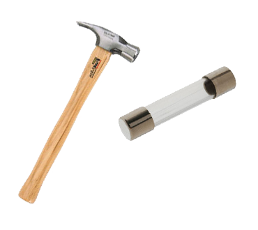

Welcome
HAMMER-FUSE attempts to port the HAMMER Filesystem to FUSE and MacFUSE.
For now, HAMMER Filesystems will only be supported in read-only mode.

HAMMER-FUSE attempts to port the HAMMER Filesystem to FUSE and MacFUSE.
For now, HAMMER Filesystems will only be supported in read-only mode.